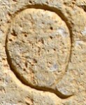

Q - type1.1
- Script
- Latin
- Grapheme
- Q
- Allograph
- type1.1
- Characteristic form:
-
- body is circular
- tail is diagonal
- tail is short
Typology
More general types
type1Exemplar

Origin: Thermae Himeraeae
between AD 101 and AD 200
